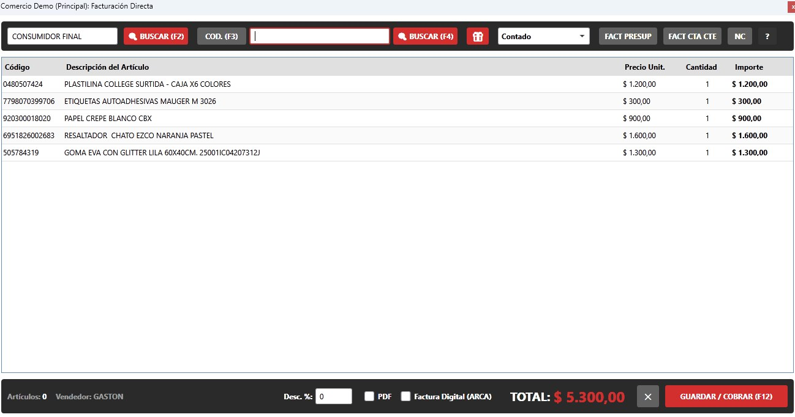
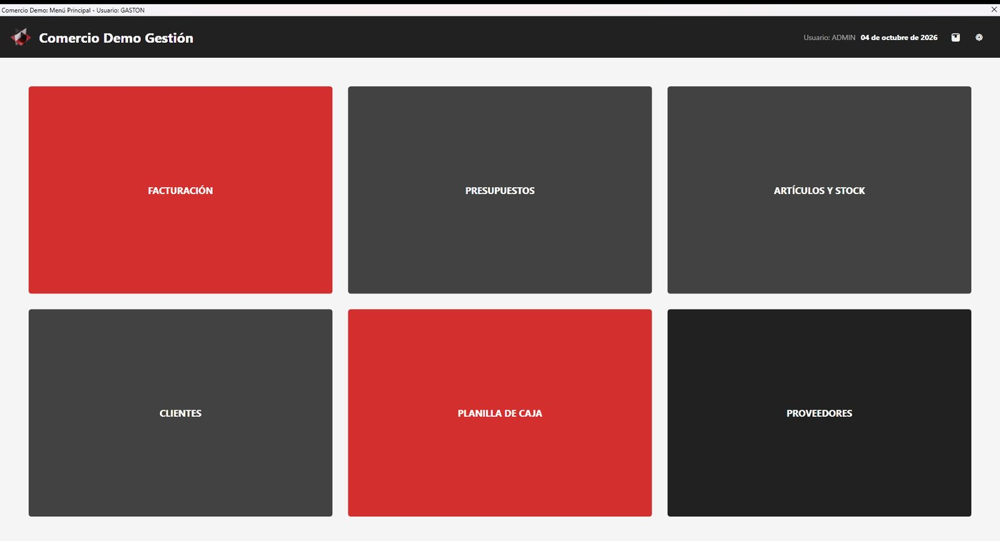
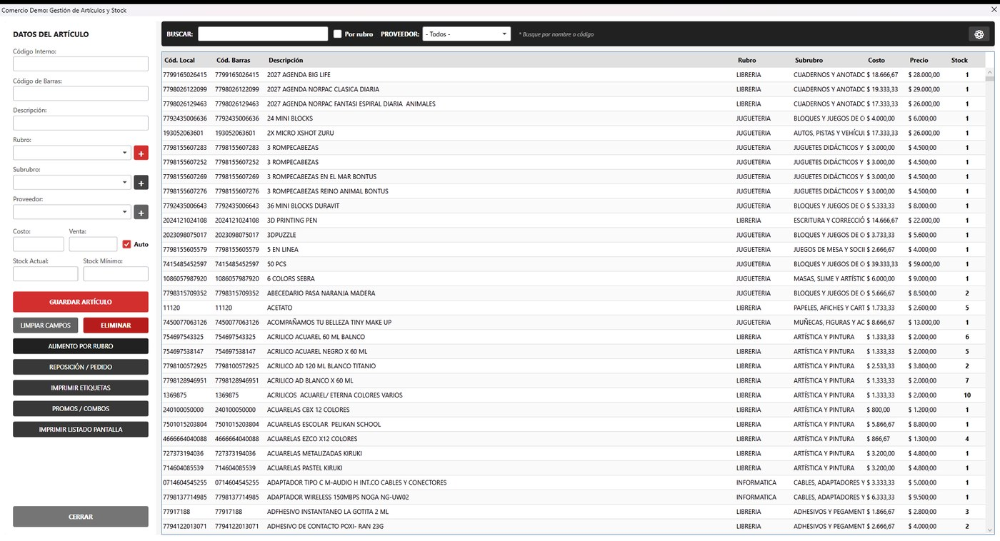
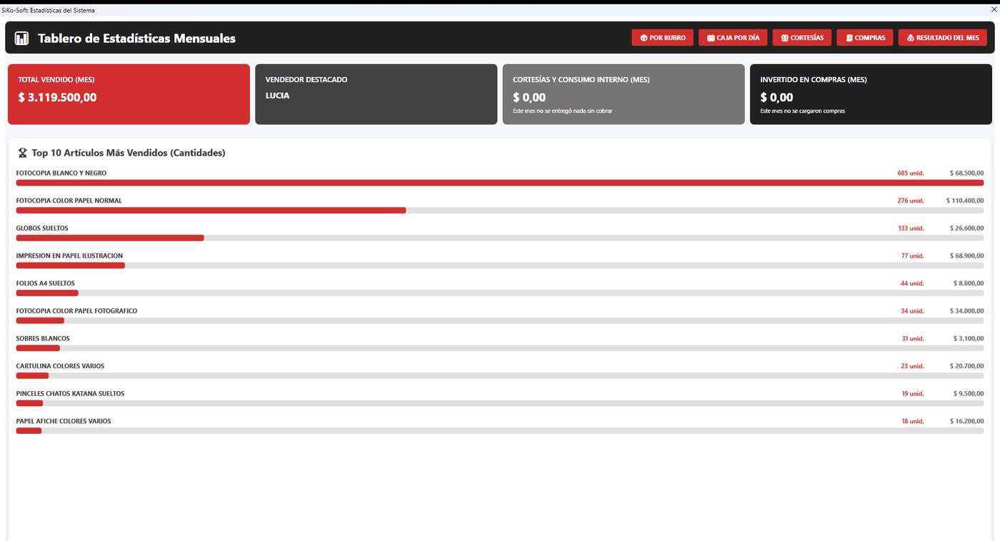
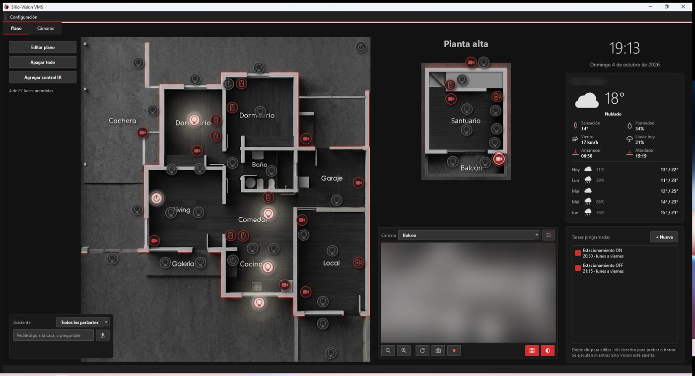

Software que resuelve el día a día del negocio
SiKoSoft desarrolla sistemas de gestión, aplicaciones para Android y Windows, e integraciones a medida. Proyectos chicos, atención directa y sin intermediarios.
Qué hacemos
Sistemas de gestión
Ventas, stock, clientes, proveedores, caja por turno y listas de precios. Funcionan en una PC sola o en red entre varias sucursales, con la base de datos en tu local.
Apps para celular y escritorio
Aplicaciones Android y Windows pensadas para una tarea concreta: tomar pedidos, cargar órdenes de trabajo, hacer un inventario o llevar un catálogo.
Integraciones y automatización
Sincronización entre sucursales con Google Drive, planillas de Google como respaldo administrativo, avisos por correo o WhatsApp, e informes que se generan solos.
Migración de sistemas viejos
Rescate de datos de sistemas heredados —incluso de archivos COBOL de los años noventa— y traslado a bases de datos modernas, sin perder el histórico.
Soporte y mantenimiento
Puesta a punto de equipos Windows, impresoras en red, respaldos, limpieza y herramientas propias de diagnóstico para dejar las máquinas listas para trabajar.
Desarrollo a pedido
Si lo que necesitás no existe o no se parece a nada de la lista, se puede armar. La mayoría de estos productos nacieron así: de un pedido puntual de un cliente.
Productos
Aplicaciones terminadas, instaladas y en uso.
SiKoGestión
Sistema de gestión comercial para Windows: ventas con lector de código de barras, stock, caja por turno, clientes y cuentas corrientes, proveedores e informes. Opera en una PC o en red entre sucursales, y cada instalación se ajusta al rubro del cliente.
Windows 10/11 · En uso en librerías, jugueterías, kioscos y un salón de comidas.

SiKo Vitrina Pro
Catálogo de coleccionables para Android y Windows: fotos, datos de cada pieza, valor estimado, exportación a PDF y respaldo en tu propio Google Drive.
Android y Windows · Ver detalle
SiKo Órdenes
Órdenes de trabajo para talleres de reparación, con app de celular para cargar equipos en el mostrador y sincronización entre sucursales mediante tu Google Drive.
Windows y Android · Ver detalle
SiKoPrint
Impresión de imágenes por lotes para vidrieras y cartelería: elige la impresora, arma la hoja y manda todo junto, sin pelear con el visor de fotos de Windows.
Windows 10/11
SiKoCleaner
Herramienta de limpieza y diagnóstico para Windows, en español y sin publicidad: libera espacio, revisa el estado del equipo y deja un informe de lo que hizo.
Windows 10/11
En pantalla
Capturas reales de los sistemas funcionando.




Las pantallas de gestión corren sobre una instalación de demostración, con datos de ejemplo.
Otros proyectos
Desarrollos a medida, trabajos internos y experimentos propios.
Comercio y administración
- Pedidos de salónApp de celular para tomar pedidos en la mesa; llegan a la caja por WiFi y salen impresos en cocina, separados por rubro.
- Sincronización entre sucursalesDos o tres locales que comparten órdenes y datos a través de una carpeta de Google Drive, sin servidor propio ni abonos mensuales.
- Control de licenciasPlanilla de Google como central de licencias de las instalaciones, administrable desde el celular.
- Migrador de bases COBOLLectura de archivos RM/COBOL de un sistema de los noventa y volcado a una base SQLite consultable.
- Avisos automáticosCorreos de cierre de caja y alertas de stock que salen solos desde cada sucursal.
Apps móviles
- Reservas de eventosApp que trabaja contra una planilla de Google: puestos, sillas y días, con el organizador viendo todo en tiempo real.
- Guía de construcciónConsulta de materiales y cómputos de obra desde el celular.
- Simulador de pintureríaPrueba de colores y cálculo de litros antes de comprar la pintura.
- Colector de inventarioToma de inventario con el celular y descarga al sistema de la PC.
- Lector de cómicsLector de archivos CBR/CBZ para celular y para escritorio, con biblioteca propia.
Automatización y hogar
- SiKo-VisionPlano interactivo de la casa: luces WiZ, Sonoff y Tuya, más cámaras, en una sola pantalla.
- SiKoWhatsBotBot de WhatsApp sobre la API oficial: responde consultas frecuentes con menú de opciones y, si hace falta, con ayuda de IA.
- Notas sincronizadasNotas adhesivas de escritorio que se mantienen iguales en todas las máquinas.
- Herramientas de mantenimientoInstaladores, gestor de controladores y puntos de restauración, armados para dejar un equipo nuevo listo en una pasada.
Arcade y entretenimiento
- SiKoPinballFrontend de pinball virtual para gabinete de tres pantallas: lanza las mesas, muestra el arte y el marcador.
- SiKoArcadeLa versión de una pantalla, para gabinetes y máquinas chicas.
- Juegos y maquetas webTragamonedas, sorteos con ruleta y otras piezas chicas hechas para probar ideas.
Con qué se construye
- C# · .NET · WPF
- Flutter
- React
- Python
- SQLite
- SQL Server
- Google Apps Script
- Google Drive API
- Android
- Windows
Demos
Estamos preparando demos para probar algunas aplicaciones directamente desde el navegador, sin instalar nada. Mientras tanto, si querés ver un sistema funcionando, se arregla una demostración por videollamada o en el local.
Contacto
Escribinos
Contanos qué necesitás resolver y te respondemos con una propuesta y un presupuesto.
Dónde estamos
Córdoba, Argentina. Trabajamos en forma presencial en la ciudad y a distancia para el resto del país.
Soporte remoto de los sistemas ya instalados, incluido.